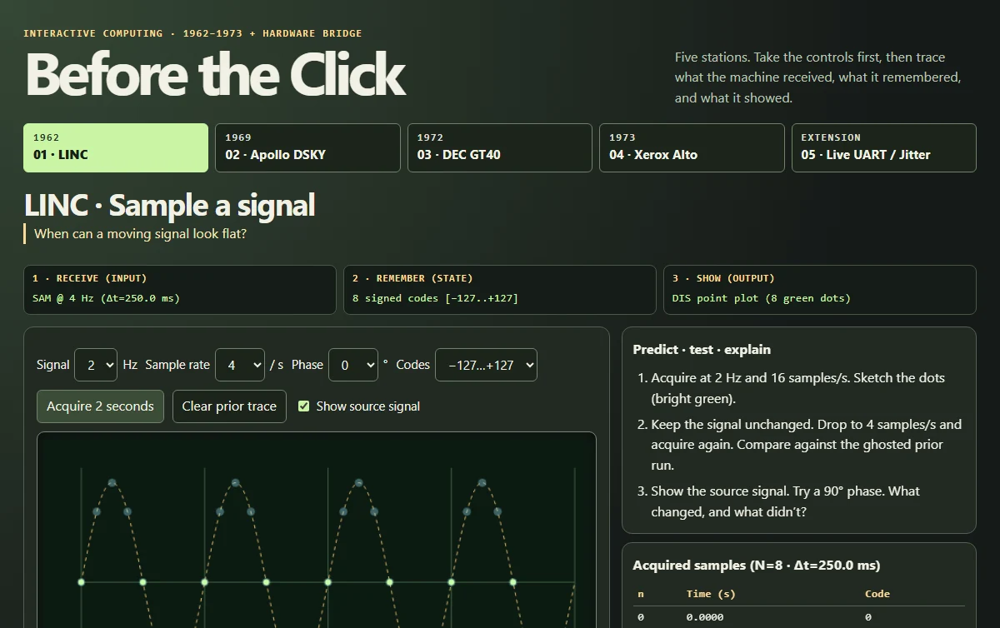

RANDALL YOUNG · EXPERIENCE BEFORE EQUATION · INTERACTIVE COMPUTING
Before the Click
Take the controls of four early interactive systems, then trace what each machine receives, remembers, and shows.
Classroom exhibit · 1962–1973
When can a moving signal look flat?
Start with the LINC. Sample the same signal at two rates and compare the points on the display. Then change the phase and predict what the next run will show.

Historical stations
Follow the input, the state, and the display
Sample a signal · LINC
Change the sample rate and compare what two runs store and show.
Test the panel · Apollo DSKY
Run the lamp test and use the results to investigate a hidden fault.
Follow the beam · DEC GT40
Arm the light pen, try a line and blank glass, then step through the display list.
Point at nothing · Xerox Alto
Draw on a blank bitmap and inspect the byte that changes beneath the cursor.
Hardware Bridge · Station 5
Measure the time between samples
Compare a clean stream with one that has timing jitter and dropped records. Check the timestamps for changing intervals and the sequence numbers for missing records.
Use the built-in simulator or connect a USB serial microcontroller in Chrome or Edge. The live bridge reads CSV records in the format seq,timestamp_us,adc_code.
Classroom kit · v2
Teach it in pairs
Plan four 45-minute lessons and an optional 30-minute hardware bridge. All five stations can run in simulation. Print one fieldbook per pair.
- Activity Overview (PDF) · why this activity was built, its historical arc, and classroom pacing.
- Teacher Guide (PDF) · lesson plans and facilitation notes.
- Student Fieldbook (PDF) · predictions, observations, and evidence to record.
- Setup instructions · browser, keyboard, and offline use.